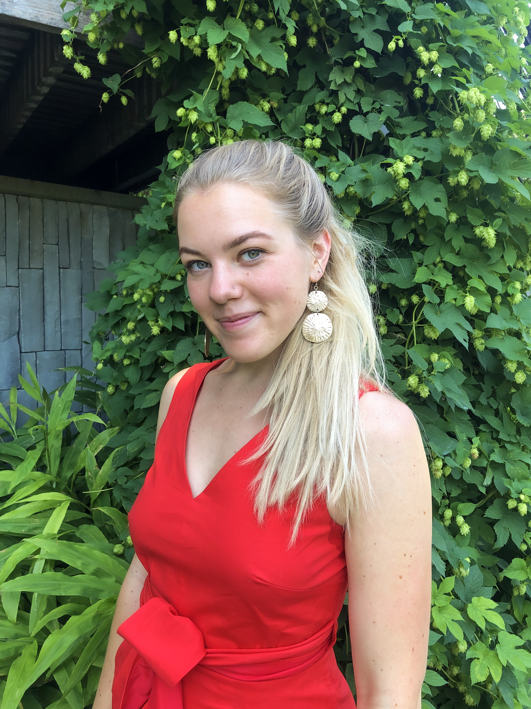

{kind=link}
Krista Rutz
A software developer

About
I'm currently studying software development in Seattle, Washington. I decided to pursue full-stack development to unite my passion for design, media, and logic with my skills in programming and creative problem solving.
I have previously worked as a Home Stager in the Seattle area; taught English in Berlin, Germany, through the Fulbright Commission; studied International Relations in Claremont, California; and taught early literacy with Americorp in Montclair, California.
I love to travel, learn human and computer languages, try new things, and eat good food.
Technologies I use
Java, JavaScript, HTML and CSS
The best books I read in 2019 were:
- Conversations with Friends by Sally Rooney
- Circe by Madeline Miller
- The White Album by Joan Didion
Work Experience
- Sisters Interior Redesign: Junior Home Stager and Assistant Manager, June 2017 to present.
- The German-American Fulbright Commission: English Teaching Assistant, September 2017 to July 2018.
- Jumpstart AmeriCorps: Corps Member, Septmber 2016 to May 2017.